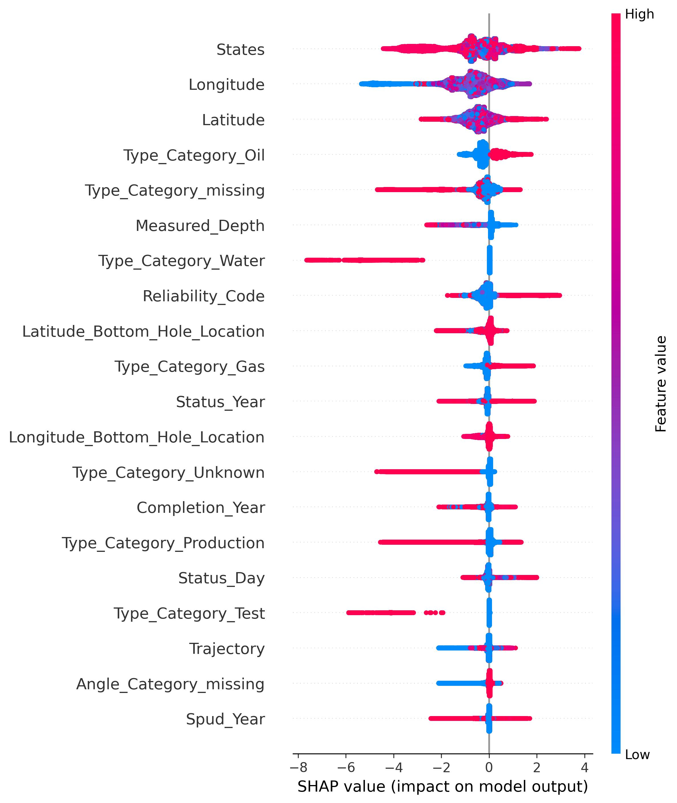

NETL · GEOSPATIAL MACHINE LEARNING · XGBOOST
Identifying Likely Orphaned Wells
I developed basin-specific XGBoost models to identify wells that may be orphaned, using well records, geographic context, and model explainability.
01Project summaryNational and regional scope
I worked with approximately 7–8 million U.S. well records, many of which had missing or inconsistent information. The objective was to identify likely orphaned-well candidates for researchers to review, not to determine legal status or estimate methane emissions.
I focused on XGBoost after considering simpler models, then built separate models for larger basins because geology, operating history, data coverage, and class balance varied geographically. I also explored an Enverus-enriched Appalachian model covering an approximately 900,000-well regional inventory.
02MethodologyFeature engineering and validation
I engineered predictors from well type, reported dates, state, depth, land cover, and location. I also calculated distance to the nearest known orphan using a haversine BallTree, with the known-orphan inventory restricted to the training split.
I used a stratified 70/30 training and holdout split, basin-specific 3- or 5-fold cross-validation, and BayesSearchCV to tune XGBoost parameters. Out-of-fold training predictions were used to choose a basin-specific probability threshold that maximized F1 before the final holdout evaluation.
The model produced precision, recall, F1, ROC-AUC, and PR-AUC metrics. I also generated SHAP summaries to examine how features influenced predictions. The original Python pipeline and its implementation limitations are documented in the research repository.
03FiguresAppalachian illustration and SHAP


04Validation resultsEarly basin checkpoint
I converted the holdout table from my modeling presentation into a CSV containing 11 basin groups, selected thresholds, sample counts, precision, recall, F1, ROC-AUC and PR-AUC. These are early-checkpoint results and predate subsequent model tuning.
Performance varied substantially across basins. For example, the Fort Worth model had considerably lower recall than the Denver and Powder River models at this checkpoint. View the complete validation table.
05Limitations and next stepsData availability and interpretation
The underlying research dataset is not publicly available, and I cannot reproduce the original numerical outputs without it. The repository preserves the historical model script and validation examples; it is not a ready-to-run replacement for the full NETL data environment.
These probabilities are intended to help prioritize candidate wells for inspection. They do not establish legal orphan status, confirm environmental contamination, or measure methane emissions.